pacman::p_load(sf, spatstat, tmap, tidyverse)Hands-on Exercise 2b
Getting Started
Objective of this exercise is discover aspatial point processes of childcare centers in Singapore by using 2nd order spatial point patterns analysis, which unlike 1st order that only observe the distributions of points in the surface, the 2nd order examine spatial relationships between points in a pattern (how one point can influence the location of another point). In this exercise, we will be using spatstat library to answer the following questions:
Are the childcare centrers in in Singapore randomly distributed throughout the country ?
If not, where are the location with higher concentration of childcare centers ?
Import Libraries
The libraries used in this exercise would be:
sf: simple features in R to encode and analyze spatial vector data
spatstat: spatial statistics with focus on analyzing spatial point patterns in SD (with some 3D support)
tmap: used to draw thematic map
tidyverse: collection of R packages that for data manipulation and visualization
The Data
In this hands-on exercise, we’ll be using the following datasets:
Import and Wrangle Geospatial Data
Since we had saved our cleaned dataset from Master Plan 2019 Subzone Boundary (No Sea) in the Hands-on 2a, we’ll just load the file here instead of importing and wrangling the dataset again.
mpsz_cl <- readRDS("data/mpsz_cl.rds")Next, we’ll extract the childcare centre dataset.
childcare_sf <- st_read("data/ChildCareServices.kml") %>%
st_zm(drop = TRUE, what = "ZM") %>%
st_transform(crs = 3414)Reading layer `CHILDCARE' from data source
`C:\stefanie-fel\ISSS626-GAA\Hands-on_Ex\Hands-on_Ex02\data\ChildCareServices.kml'
using driver `KML'
Simple feature collection with 1925 features and 2 fields
Geometry type: POINT
Dimension: XYZ
Bounding box: xmin: 103.6878 ymin: 1.247759 xmax: 103.9897 ymax: 1.462134
z_range: zmin: 0 zmax: 0
Geodetic CRS: WGS 84We will wrangle the dataframe as Hands-on 2a did.
childcare_ppp <- as.ppp(childcare_sf)class(childcare_ppp)[1] "ppp"# extract punggol, tampines, choa chu kang and jurong west
pg <- mpsz_cl %>%
filter(PLN_AREA_N == "PUNGGOL")
tm <- mpsz_cl %>%
filter(PLN_AREA_N == "TAMPINES")
ck <- mpsz_cl %>%
filter(PLN_AREA_N == "CHOA CHU KANG")
jw <- mpsz_cl %>%
filter(PLN_AREA_N == "JURONG WEST")# create owin objects
pg_owin = as.owin(pg)
tm_owin = as.owin(tm)
ck_owin = as.owin(ck)
jw_owin = as.owin(jw)#combine with point object
childcare_pg_ppp = childcare_ppp[pg_owin]
childcare_tm_ppp = childcare_ppp[tm_owin]
childcare_ck_ppp = childcare_ppp[ck_owin]
childcare_jw_ppp = childcare_ppp[jw_owin]#rescale form meters to km
childcare_pg_ppp.km = rescale.ppp(childcare_pg_ppp, 1000, "km")
childcare_tm_ppp.km = rescale.ppp(childcare_tm_ppp, 1000, "km")
childcare_ck_ppp.km = rescale.ppp(childcare_ck_ppp, 1000, "km")
childcare_jw_ppp.km = rescale.ppp(childcare_jw_ppp, 1000, "km")2nd Order Spatial Point Patterns Analysis
Analyze Spatial Point Using G-Function
The G function measures the distribution of the distances from an arbitrary event to its nearest event. In this section, we’ll compute G-section estimation using Gest() from spatstats library and how to perform monte carlo simulation using envelope() of sptatstat library.
Choa Chu Kang Planning Area
First, we’ll compute G-function estimation with Gest()
set.seed(1234)
G_CK = Gest(childcare_ck_ppp, correction = "border")
plot(G_CK, xlim=c(0,500))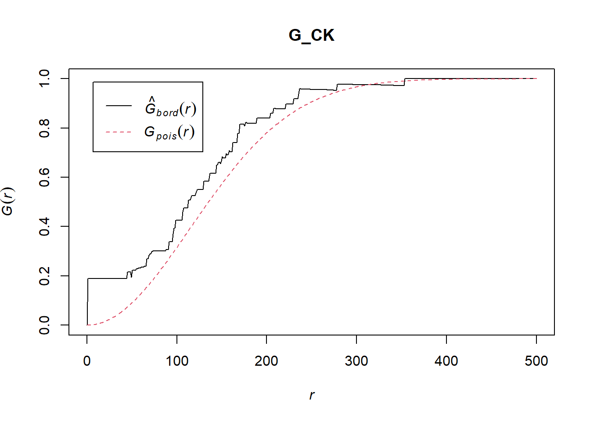
And then perform complete spatial randomness test to confirm the spatial pattern. We’ll do so using hypothesis test with the following H0 and H1:
H0: the distribution services at Choa Chu Kang are not randomly distributed
H1: the distribution services at Choa Chu Kang are randomly distributed
The p-value needs to be smaller than alpha value 0.001 for H0 to be rejected.
Next, We’ll test using Monte Carlo test with G-function
G_CK.csr <- envelope(childcare_ck_ppp, Gest, nsim = 999)Generating 999 simulations of CSR ...
1, 2, 3, ......10.........20.........30.........40.........50.........60..
.......70.........80.........90.........100.........110.........120.........130
.........140.........150.........160.........170.........180.........190........
.200.........210.........220.........230.........240.........250.........260......
...270.........280.........290.........300.........310.........320.........330....
.....340.........350.........360.........370.........380.........390.........400..
.......410.........420.........430.........440.........450.........460.........470
.........480.........490.........500.........510.........520.........530........
.540.........550.........560.........570.........580.........590.........600......
...610.........620.........630.........640.........650.........660.........670....
.....680.........690.........700.........710.........720.........730.........740..
.......750.........760.........770.........780.........790.........800.........810
.........820.........830.........840.........850.........860.........870........
.880.........890.........900.........910.........920.........930.........940......
...950.........960.........970.........980.........990........
999.
Done.plot(G_CK.csr)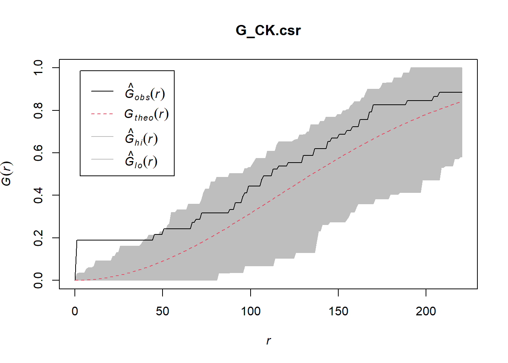
How can we interpret the result:
If G-function increase rapidly at short distance, it means the events are clustered in a point pattern
If G-function increase slowly up to a distance where most events spaced and then increase rapidly, it means the events are even in a point pattern
The significance of the G-function is based on the Monte Carlo simulation, of the clustered pattern is above the envelopes, then it is a clustered pattern. If it’s below the envelopes, hen it is a regular pattern, while if it’s within the envelopes, it’s homogenous sitribution (or CSR)
Tampines Planning Area
First, we’ll compute the G-function estimation using best for correction argument.
G_tm = Gest(childcare_tm_ppp, correction = "best")
plot(G_tm)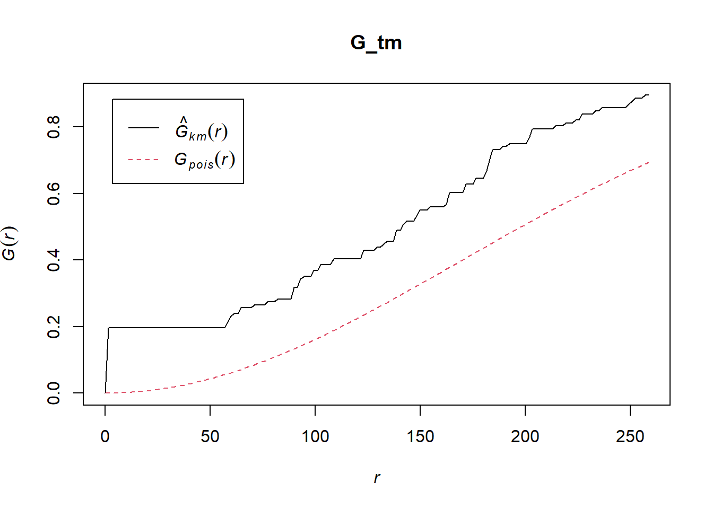
The same alpha value (0.001) and hypothesis testing will be done where:
H0: the distribution services at Tampines are not randomly distributed
H1: the distribution services at Tampines are randomly distributed
We’ll use Monte Carlo simulation to confirm our findings
G_tm.csr <- envelope(childcare_tm_ppp, Gest, correction = "all", nsim = 999)Generating 999 simulations of CSR ...
1, 2, 3, ......10.........20.........30.........40.........50.........60..
.......70.........80.........90.........100.........110.........120.........130
.........140.........150.........160.........170.........180.........190........
.200.........210.........220.........230.........240.........250.........260......
...270.........280.........290.........300.........310.........320.........330....
.....340.........350.........360.........370.........380.........390.........400..
.......410.........420.........430.........440.........450.........460.........470
.........480.........490.........500.........510.........520.........530........
.540.........550.........560.........570.........580.........590.........600......
...610.........620.........630.........640.........650.........660.........670....
.....680.........690.........700.........710.........720.........730.........740..
.......750.........760.........770.........780.........790.........800.........810
.........820.........830.........840.........850.........860.........870........
.880.........890.........900.........910.........920.........930.........940......
...950.........960.........970.........980.........990........
999.
Done.plot(G_tm.csr)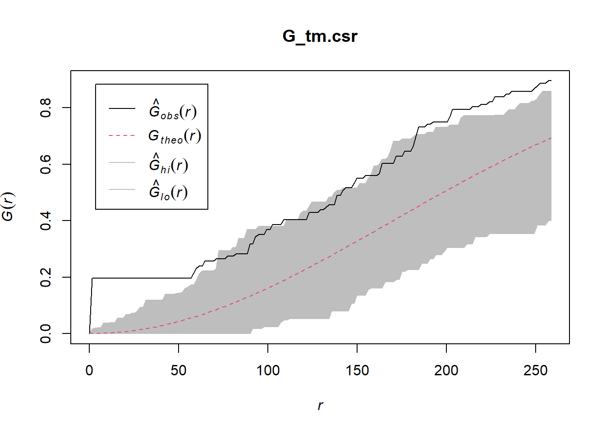
Analyze Spatial Point Using F-Function
The F-function measures empty space function F(r) or its hazard rate (h(r) form a point pattern in a window of arbitrary shape. In this section, we’ll compute F-section estimation using Fest() from spatstats library and how to perform monte carlo simulation using envelope() of sptatstat library.
Choa Chu Kang Planning Area
First, we’ll compute F-function estimation with Fest()
F_CK = Fest(childcare_ck_ppp)
plot(F_CK)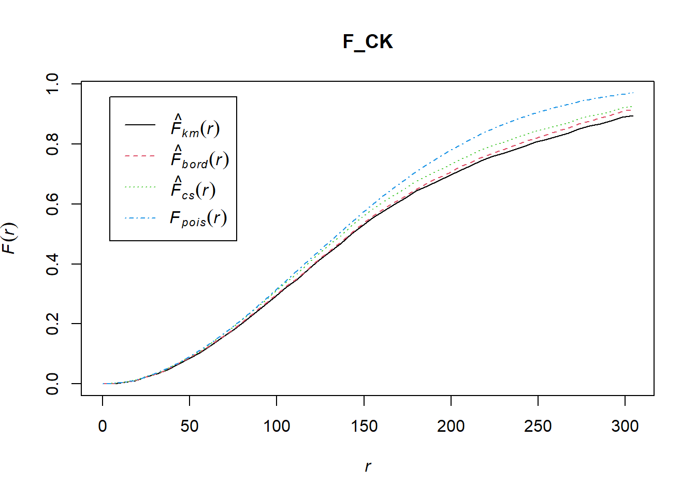
And then perform complete spatial randomness test to confirm the spatial pattern. We’ll do so using hypothesis test with the following H0 and H1:
H0: the distribution services at Choa Chu Kang are not randomly distributed
H1: the distribution services at Choa Chu Kang are randomly distributed
The p-value needs to be smaller than alpha value 0.001 for H0 to be rejected.
Next, We’ll test using Monte Carlo test with F-function
F_CK.csr <- envelope(childcare_ck_ppp, Fest, nsim = 999)Generating 999 simulations of CSR ...
1, 2, 3, ......10.........20.........30.........40.........50.........60..
.......70.........80.........90.........100.........110.........120.........130
.........140.........150.........160.........170.........180.........190........
.200.........210.........220.........230.........240.........250.........260......
...270.........280.........290.........300.........310.........320.........330....
.....340.........350.........360.........370.........380.........390.........400..
.......410.........420.........430.........440.........450.........460.........470
.........480.........490.........500.........510.........520.........530........
.540.........550.........560.........570.........580.........590.........600......
...610.........620.........630.........640.........650.........660.........670....
.....680.........690.........700.........710.........720.........730.........740..
.......750.........760.........770.........780.........790.........800.........810
.........820.........830.........840.........850.........860.........870........
.880.........890.........900.........910.........920.........930.........940......
...950.........960.........970.........980.........990........
999.
Done.plot(F_CK.csr)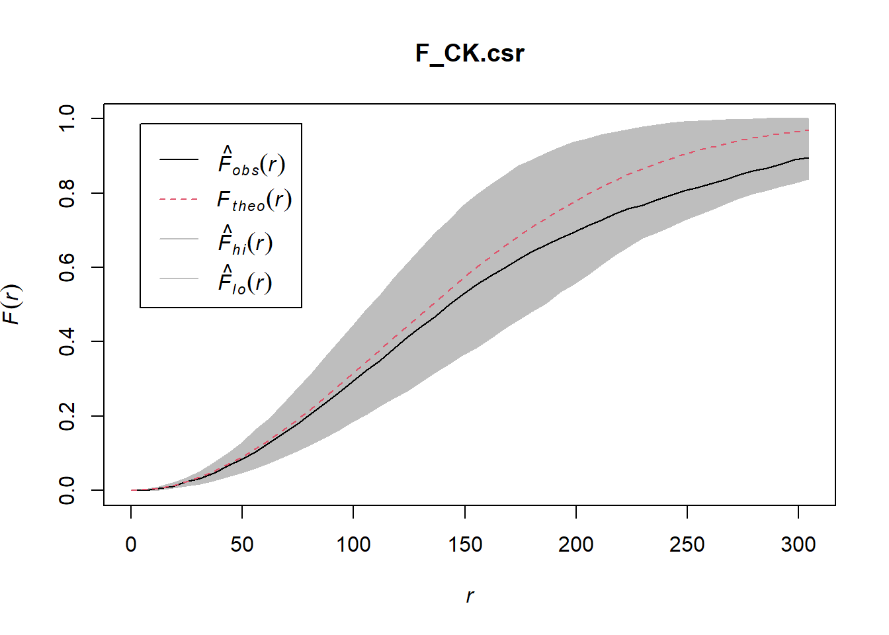
How to interpret F-function results:
If F(r) rise slowly at first but more rapidly at longer distances, then it is clustered pattern point
If F(r) rise rapidly and then slowly at longer distance, it signifies evenness in pattern point.
Similar to G-function, the significance test F-function will confirm if it;s a clustered pattern if the line is below the envelopes. If it;s above the envelopes, then it;s a regular pattern, while if the line falls within the envelopes, it’s CSR.
Tampines Planning Area
First, we’ll compute the F-function estimation using best for correction argument.
F_tm = Fest(childcare_tm_ppp, correction = "best")
plot(F_tm)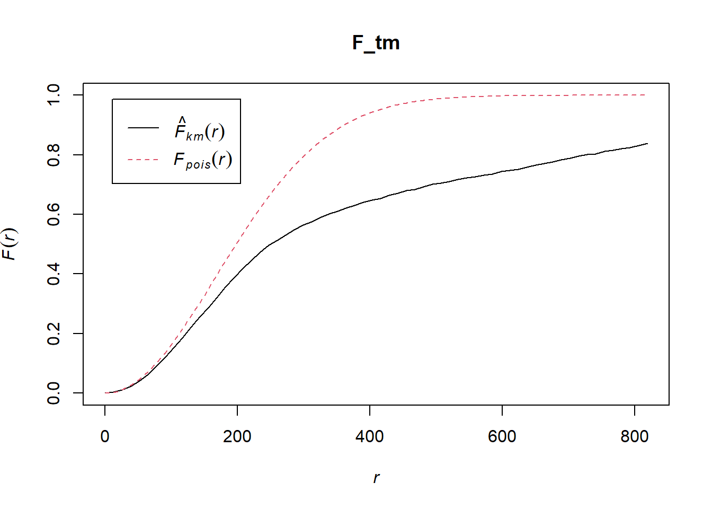
The same alpha value (0.001) and hypothesis testing will be done where:
H0: the distribution services at Tampines are not randomly distributed
H1: the distribution services at Tampines are randomly distributed
We’ll use Monte Carlo simulation to confirm our findings
F_tm.csr <- envelope(childcare_tm_ppp, Fest, correction = "all", nsim = 999)Generating 999 simulations of CSR ...
1, 2, 3, ......10.........20.........30.........40.........50.........60..
.......70.........80.........90.........100.........110.........120.........130
.........140.........150.........160.........170.........180.........190........
.200.........210.........220.........230.........240.........250.........260......
...270.........280.........290.........300.........310.........320.........330....
.....340.........350.........360.........370.........380.........390.........400..
.......410.........420.........430.........440.........450.........460.........470
.........480.........490.........500.........510.........520.........530........
.540.........550.........560.........570.........580.........590.........600......
...610.........620.........630.........640.........650.........660.........670....
.....680.........690.........700.........710.........720.........730.........740..
.......750.........760.........770.........780.........790.........800.........810
.........820.........830.........840.........850.........860.........870........
.880.........890.........900.........910.........920.........930.........940......
...950.........960.........970.........980.........990........
999.
Done.plot(F_tm.csr)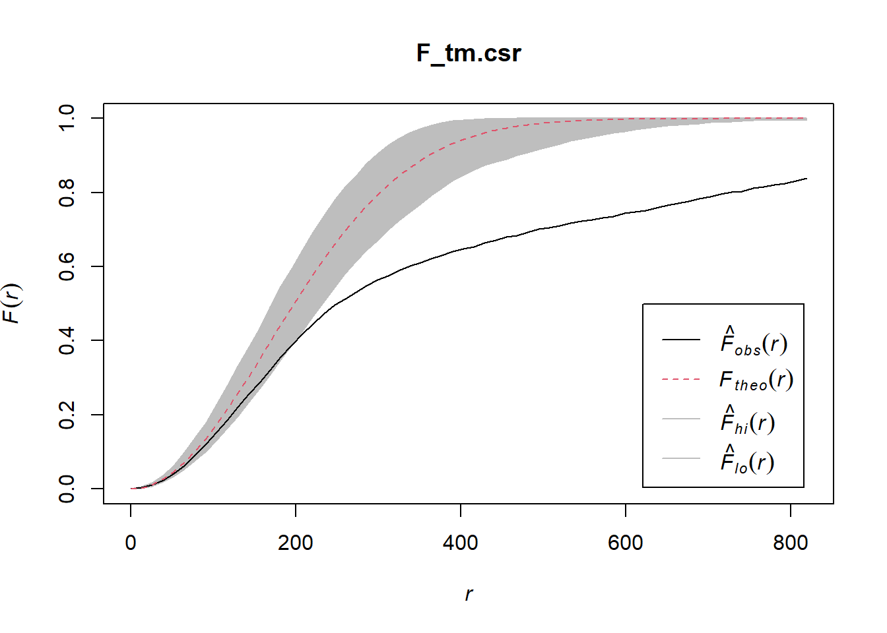
Analyze Spatial Point Using K-Function
The K-function examine the number of events found up to a given distance of any particular event. In this section, we’ll compute G-section estimation using Kest() from spatstats library and how to perform monte carlo simulation using envelope() of sptatstat library.
Choa Chu Kang Planning Area
First, we’ll compute K-function estimation with Kest()
K_ck = Kest(childcare_ck_ppp, correction = "Ripley")
plot(K_ck, . -r ~ r, ylab= "K(d)-r", xlab = "d(m)")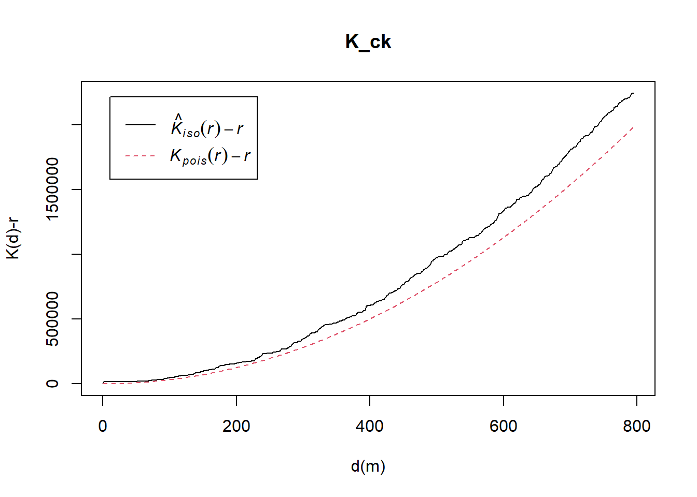
And then perform complete spatial randomness test to confirm the spatial pattern. We’ll do so using hypothesis test with the following H0 and H1:
H0: the distribution services at Choa Chu Kang are not randomly distributed
H1: the distribution services at Choa Chu Kang are randomly distributed
The p-value needs to be smaller than alpha value 0.001 for H0 to be rejected.
Next, We’ll test using Monte Carlo test with K-function
K_ck.csr <- envelope(childcare_ck_ppp, Kest, nsim = 99, rank = 1, glocal=TRUE)Generating 99 simulations of CSR ...
1, 2, 3, 4, 5, 6, 7, 8, 9, 10, 11, 12, 13, 14, 15, 16, 17, 18, 19, 20,
21, 22, 23, 24, 25, 26, 27, 28, 29, 30, 31, 32, 33, 34, 35, 36, 37, 38, 39, 40,
41, 42, 43, 44, 45, 46, 47, 48, 49, 50, 51, 52, 53, 54, 55, 56, 57, 58, 59, 60,
61, 62, 63, 64, 65, 66, 67, 68, 69, 70, 71, 72, 73, 74, 75, 76, 77, 78, 79, 80,
81, 82, 83, 84, 85, 86, 87, 88, 89, 90, 91, 92, 93, 94, 95, 96, 97, 98,
99.
Done.plot(K_ck.csr, . - r ~ r, xlab="d", ylab="K(d)-r")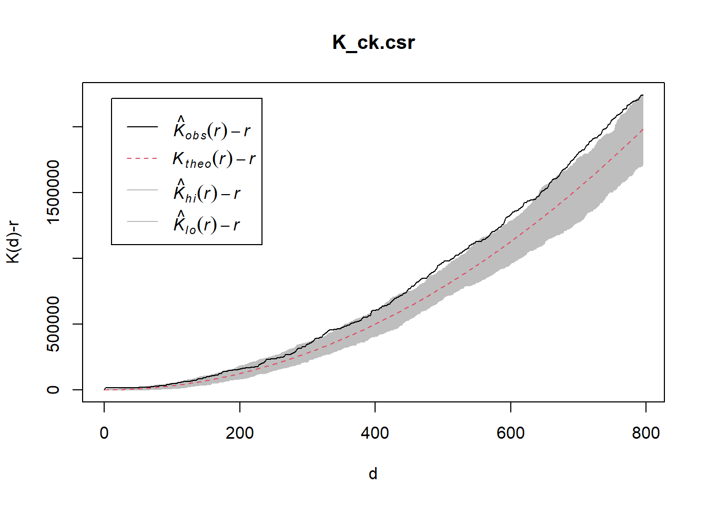
How to interpret K-function results:
If K(h) < 𝜋ℎ^2, then point pattern is regular
If K(h) > 𝜋ℎ^2, then point pattern is clustered
Significant test are the same as G-function and F-function
Tampines Planning Area
First, we’ll compute the K-function estimation using Ripley for correction argument.
K_tm = Kest(childcare_tm_ppp, correction = "Ripley")
plot(K_tm, . -r ~ r,
ylab= "K(d)-r", xlab = "d(m)",
xlim=c(0,1000))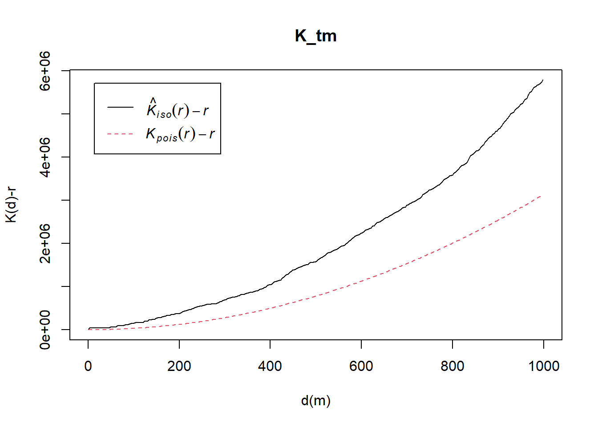
The same alpha value (0.001) and hypothesis testing will be done where:
H0: the distribution services at Tampines are not randomly distributed
H1: the distribution services at Tampines are randomly distributed
We’ll use Monte Carlo simulation to confirm our findings
K_tm.csr <- envelope(childcare_tm_ppp, Kest, nsim = 99, rank = 1, glocal=TRUE)Generating 99 simulations of CSR ...
1, 2, 3, 4, 5, 6, 7, 8, 9, 10, 11, 12, 13, 14, 15, 16, 17, 18, 19, 20,
21, 22, 23, 24, 25, 26, 27, 28, 29, 30, 31, 32, 33, 34, 35, 36, 37, 38, 39, 40,
41, 42, 43, 44, 45, 46, 47, 48, 49, 50, 51, 52, 53, 54, 55, 56, 57, 58, 59, 60,
61, 62, 63, 64, 65, 66, 67, 68, 69, 70, 71, 72, 73, 74, 75, 76, 77, 78, 79, 80,
81, 82, 83, 84, 85, 86, 87, 88, 89, 90, 91, 92, 93, 94, 95, 96, 97, 98,
99.
Done.plot(K_tm.csr, . - r ~ r,
xlab="d", ylab="K(d)-r", xlim=c(0,500))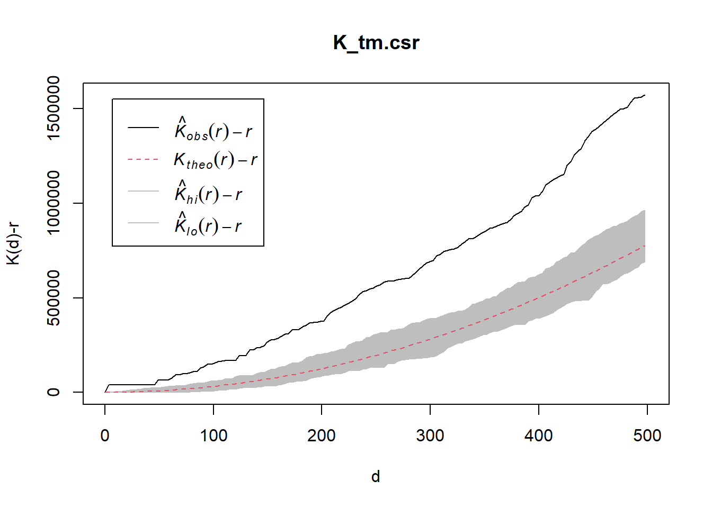
Analyze Spatial Point Using L-Function
In practice, the K-function will be normalized to obatin a benchmark of zero. So in this section, we’ll compute L-section estimation using Lest() from spatstats library and how to perform monte carlo simulation using envelope() of sptatstat library.
Choa Chu Kang Planning Area
First, we’ll compute L-function estimation with Lest()
L_ck = Lest(childcare_ck_ppp, correction = "Ripley")
plot(L_ck, . -r ~ r,
ylab= "L(d)-r", xlab = "d(m)")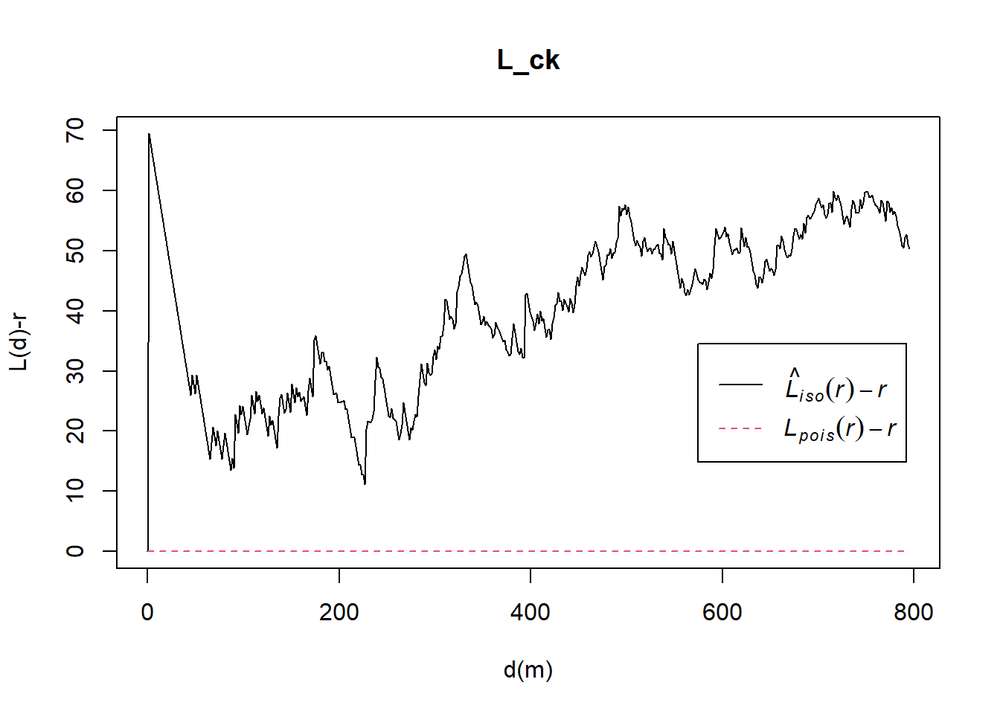
And then perform complete spatial randomness test to confirm the spatial pattern. We’ll do so using hypothesis test with the following H0 and H1:
H0: the distribution services at Choa Chu Kang are not randomly distributed
H1: the distribution services at Choa Chu Kang are randomly distributed
The p-value needs to be smaller than alpha value 0.001 for H0 to be rejected.
Next, We’ll test using Monte Carlo test with L-function
L_ck.csr <- envelope(childcare_ck_ppp, Lest, nsim = 99, rank = 1, glocal=TRUE)Generating 99 simulations of CSR ...
1, 2, 3, 4, 5, 6, 7, 8, 9, 10, 11, 12, 13, 14, 15, 16, 17, 18, 19, 20,
21, 22, 23, 24, 25, 26, 27, 28, 29, 30, 31, 32, 33, 34, 35, 36, 37, 38, 39, 40,
41, 42, 43, 44, 45, 46, 47, 48, 49, 50, 51, 52, 53, 54, 55, 56, 57, 58, 59, 60,
61, 62, 63, 64, 65, 66, 67, 68, 69, 70, 71, 72, 73, 74, 75, 76, 77, 78, 79, 80,
81, 82, 83, 84, 85, 86, 87, 88, 89, 90, 91, 92, 93, 94, 95, 96, 97, 98,
99.
Done.How to interpret L-function results:
L(r)>0 means that the observed distribution is geographically concentrated.
L(r)<0 means dispersion.
L(r)=0 signifies complete spatial randomness (CRS).
Tampines Planning Area
First, we’ll compute the L-function estimation using Ripley for correction argument.
L_tm = Lest(childcare_tm_ppp, correction = "Ripley")
plot(L_tm, . -r ~ r,
ylab= "L(d)-r", xlab = "d(m)",
xlim=c(0,1000))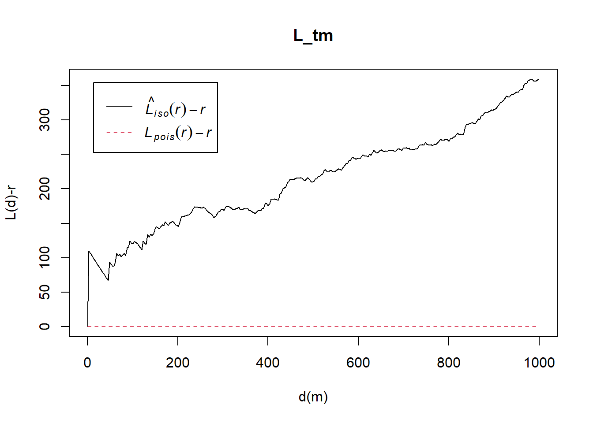
The same alpha value (0.001) and hypothesis testing will be done where:
H0: the distribution services at Tampines are not randomly distributed
H1: the distribution services at Tampines are randomly distributed
We’ll use Monte Carlo simulation to confirm our findings
L_tm.csr <- envelope(childcare_tm_ppp, Lest, nsim = 99, rank = 1, glocal=TRUE)Generating 99 simulations of CSR ...
1, 2, 3, 4, 5, 6, 7, 8, 9, 10, 11, 12, 13, 14, 15, 16, 17, 18, 19, 20,
21, 22, 23, 24, 25, 26, 27, 28, 29, 30, 31, 32, 33, 34, 35, 36, 37, 38, 39, 40,
41, 42, 43, 44, 45, 46, 47, 48, 49, 50, 51, 52, 53, 54, 55, 56, 57, 58, 59, 60,
61, 62, 63, 64, 65, 66, 67, 68, 69, 70, 71, 72, 73, 74, 75, 76, 77, 78, 79, 80,
81, 82, 83, 84, 85, 86, 87, 88, 89, 90, 91, 92, 93, 94, 95, 96, 97, 98,
99.
Done.plot(L_tm.csr, . - r ~ r,
xlab="d", ylab="L(d)-r", xlim=c(0,500))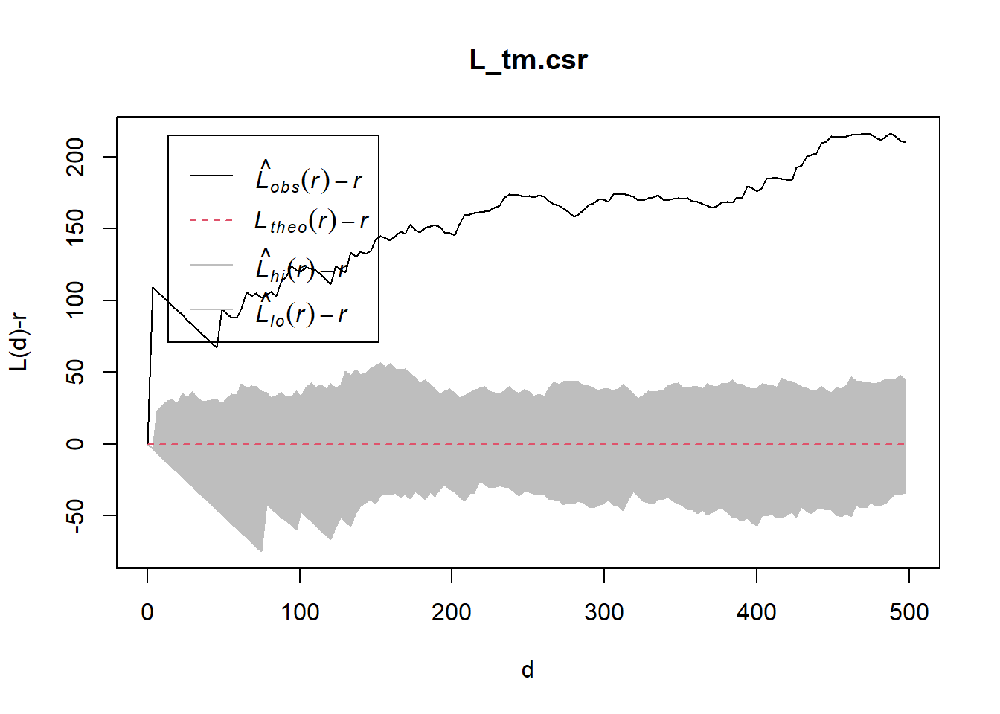